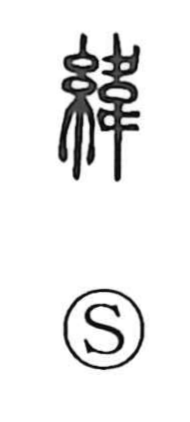

緯

Uncategorized
Kun: yokoito | On: i
weft ・ woof ・ latitude
Explanation
Shirakawa explains 緯 as a phono-semantic graph with 韋 as the phonetic core. In ancient form, 韋 depicts a city wall with footprints moving to left and right around it, an image of going back and forth. That lateral, shuttling motion evokes the action of laying the crosswise thread in weaving, so the character comes to mean the horizontal weft. In contrast to 経, which names the vertical warp, the pair 経緯 extends from “warp and weft” to “longitude and latitude,” and by further development to the notion of the layout or course of things.